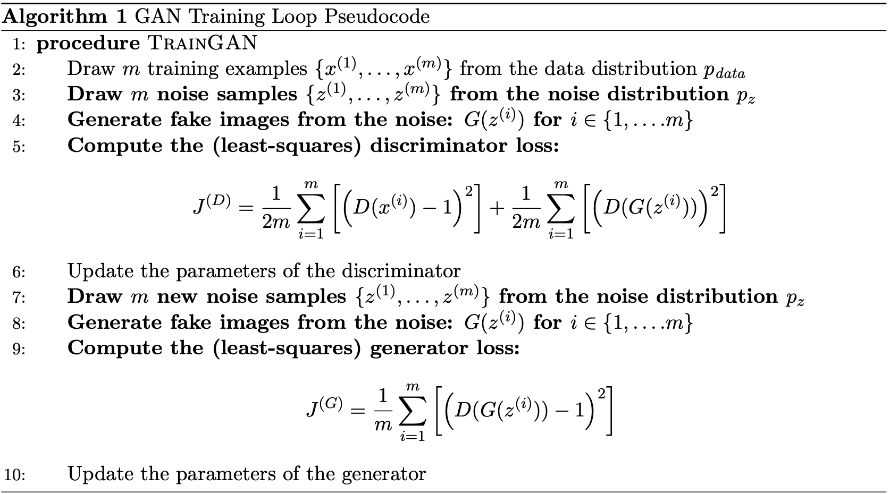

DCGAN
Methodology
Discriminator
GAN consist of a discriminator and a generator. The discriminator used is a few layers of CNN network that outputs a single number that predicts
if an image is real or fake. The architecture of the discriminator is shown below. I used a kernel size K = 4 and stride S = 2. Since I want
to half the image size at every layer for conv1 to conv4, I can use the equation input_size = (output_size - K + 2P) / S + 1,
to calculate that P = 1 for this case. For the conv5, using the same equation I can calculate that P = 0.

Generator
For the generator, we used upsampling and convolutional layer to generate an image from a vector of random noise. The architecture of the generator
is shown below. up_conv2 to up_conv5 uses a 2x upsampling then followed by convolutional with K = 5, S = 1, and P = 2. Hence, the input to the layer
is doubled in size and the convolutions do not change the sizes. up_conv1 is implemented with only a convolutional layer with K = 4, S = 1, and P = 3.
This will change the input 1x1 into output 4x4.
Training
Training is done with a simple GAN loss described below. To prevent over-fit, the data augmentation is used. I used random crop, color jitter,
random horizontal flip and differential augmentation.

Results
Basic augmentation

Deluxe augmentation
Basic augmentation with diffaug
Deluxe augmentation with diffaug

Below is the sample of the training, left is output very early in the training, the right is the output after training
There is a stark improvement between the two images, the left image has a shadowy outline of the cat. But the images
are very uniform, details are missing, colors are wrong, and artifacts such as color lines exist. But the image on the right
looks very realistic, with minor artifacts such as the horizontal streaks where the generator struggles to create the whiskers.
Effect of Differential Augmentation
This is the result with deluxe augmentation. Left is output without diffaug, the right is the output with diffaug
This is the result with basic augmentation. Left is output without diffaug, the right is the output with diffaug
The differential augmentation is applied to both real and fake images at training time to reduce over-fit. It includes augmentation in the color space
with changing brightness, saturation, and contrast. It also includes shifting the image with translation, and random cutouts. By preventing the
discriminators from over-fitting it is able to make the generators to create more general and realistic cat images as the discriminator cannot simply
memorize the training data. The result above for both the basic and deluxe augmentation shows that diffaug improves generator performance by creating
more varied cat images with less artifacts.
CycleGAN
Methodology
Discriminator
I used a patch discriminator for CycleGAN, i.e. instead of outputting 1x1 for the prediction of real/fake, it outputs 4x4 spatial output.
The same discriminator from DCGAN can be employed, with a small change to the last layer. For conv5 I used K = 1, S = 1, and P = 0 to get the
output to be 4x4.
Generator
Cycle GAN generator consists of downsampling layers, residual block layers, upsampling layers, and unet style concatenation.
Training
Training is done with cycle GAN loss described below. To prevent overfit, the same data augmentation is used as DCGAN. A unique feature of
cycleGAN is the Cycle Consistency Loss, which is an L1 loss of an image being transformed to another domain and back.
Results with Cat Dataset
Cyclegan with patch discriminator without cycle-consistency loss at early iterations
Cyclegan with patch discriminator with cycle-consistency loss at early iterations
Generator output at early iterations look reasonable, so now we will try to train for longer
Cyclegan with patch discriminator without cycle-consistency loss at late iterations
Cyclegan with patch discriminator with cycle-consistency loss at late iterations
The output without cycle-consistency loss produces more uniform images, this is most obvious with the right image.
The cat pose is similar regardless of the input. This is because the generator is only trained with GAN loss, and tries
to fool the discriminator. So once the generator found an image that consistently fool the discriminator, it will stick to
that output. On the other hand, the output with cycle-consistency loss tries to preserve the input semantics and layout.
Therefore, the output of the cat pose mimic that of the input. This can be observed by looking at which direction is the input
cat looking at, you will find similar direction in the generated cat.
Cyclegan with DC discriminator with cycle-consistency loss at late iterations
The DC discriminator seems to perform slightly worse than the patch discriminator. This is because the patch discriminator produces
a 4x4 output instead of 1x1. This helps to preserve local structures better. It considers patches of images instead of the entire image, forcing
all regions of the image to be locally 'real', eliminating some artifacts such as blurriness which can be ignored when considering the entire
image as a whole. This can be seen with the cat eyes and whiskers. The output with DCGAN has 'laser' eyes and blurry whiskers.
Results with Apple Orange Dataset
In general, the model performs much worse in this dataset, this can be because of the high variety of image context.
The previous cat dataset has similar cat images with only slightly varying face poses. But the apple orange dataset has fruits in
different environment and scale. For example, close-up shots of fruits, a person holding fruits, multiple fruits in baskets, cut fruits, etc.
Hence the model struggles to understand what is an apple and an orange.
Cyclegan with patch discriminator without cycle-consistency loss at late iterations
Cyclegan with patch discriminator with cycle-consistency loss at late iterations
The output without cycle-consistency loss strangely still produces similar structures as the input. This can be because of the U-Net
architecture that concatenate the features of the input to the output. Regardless, the observation with the cat dataset still holds true.
The generator tries to generalize and crate less varying output. For example, it learns that oranges are yellow/orange in color, and paints
the output with a swath of that color. The output with cycle-consistency loss preserves the more of the structures, but it suffers in the
translation part, most pronounce by the failure to transfer the colors.
Cyclegan with DC discriminator with cycle-consistency loss at late iterations
The DC discriminator seems to perform slightly better than the patch discriminator for this case, which contradicts the previous observation with
the cat dataset. This might be because the model is already struggling to create a realistic output, so forcing it to have local realism hurts the performance
even more.